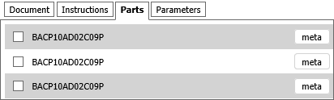
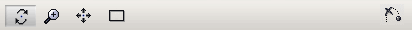

Applicazione di formazione 3D - interfaccia utente
Questa applicazione di formazione 3D consente di studiare la procedura di formazione. È possibile utilizzare l'applicazione di formazione in tre diverse modalità:
- Modalità dimostrazione: riproduzione automatica della procedura. È possibile riprodurre gli step desiderati più volte a varie velocità ed esaminare la procedura da diverse angolazioni.
- Modalità studio: riproduzione interattiva della procedura. È possibile eseguire la procedura con l'aiuto di vari suggerimenti.
- Modalità esame: testare le proprie conoscenze. La procedura deve essere eseguita senza alcun suggerimento.
Ambiente di formazione
Il riquadro in basso consente di selezionare e attivare la modalità di formazione appropriata:

Nelle modalità Dimostrazione e Studio è possibile controllare la riproduzione della procedura utilizzando un pannello di controllo simile al VCR:

- Riproduci step avvia (interrompe) la riproduzione della procedura.
- Ripristina step arresta e riavvolge lo step corrente all'inizio.
- Step precedente sposta la riproduzione allo step precedente.
- Step successivo sposta la riproduzione allo step successivo.
- Esci dalla modalità annulla la modalità corrente.
- Posizione consente di spostare la telecamera nell'area appropriata del modello 3D.
Il riquadro Operazione rappresenta l'operazione prevista o il gruppo di operazioni. È necessario leggere le istruzioni ed eseguire azioni, ad esempio immettere il parametro richiesto o selezionare l'oggetto che fa parte di una procedura:

Il riquadro superiore consente di passare attraverso la procedura:

- Documenti. Visualizza la parte del documento associata allo step della procedura correntemente attivo.
- Istruzioni. Visualizza i commenti associati allo step di formazione corrente.
- Parti. Visualizza l'elenco degli oggetti interattivi nella formazione corrente. Consente di trovare la posizione degli oggetti e di visualizzare ulteriori meta-informazioni.
- Parametri. Visualizza l'elenco dei parametri utilizzati nella formazione corrente. Questi parametri vengono utilizzati come salto condizionale nello scenario di formazione. È possibile specificare un parametro di questo tipo.
Modalità di formazione
Modalità dimostrazione
- Per accedere a questa modalità, selezionare la modalità Dimostrazione, quindi fare clic su Attiva modalità.
- Per avviare la riproduzione, fare clic su Riproduci step. La descrizione dello step correntemente attivo viene visualizzata nella pagina a schede Documento.
- La procedura viene visualizzata in modo continuativo.
- Per interrompere temporaneamente la riproduzione, fare clic su Pausa. Fare clic su Riproduci per continuare la riproduzione.
- Per visualizzare la descrizione dell'intera procedura, fare clic su Documento.
- È possibile navigare nella finestra 3D (vedere la sezione Navigazione nella finestra 3D di questo documento).
- La pagina a schede Parti consente di evidenziare la parte desiderata nella finestra 3D (fare clic sull'opzione Individua) e visualizzare informazioni aggiuntive (fare clic su Meta).
- Per passare allo step successivo o precedente della procedura, fare clic su Step successivo o Step precedente.
- Per uscire dalla modalità Dimostrazione, fare clic Esci dalla modalità.
Modalità studio
- Per accedere a questa modalità, selezionare la modalità Studio, quindi fare clic su Attiva modalità.
- Fare clic su Riproduci step per iniziare lo studio della procedura. È necessario seguire le istruzioni visualizzate nel riquadro Operazione. Esistono tre gruppi di istruzioni:
- Individuare le parti coinvolte nello step della procedura corrente, quindi fare clic su di esse nella finestra 3D o nella pagina a schede Parti.
- Selezionare la risposta corretta nell'elenco di scelta.
- Specificare un valore per un parametro.
- Il pulsanteIgnora consente di passare all'operazione successiva nello scenario di formazione.
- Il risultato del test indica visivamente che sono stati commessi degli errori (verdi – corretti, rossi – non corretti). Il livello dell'errore è specificato nella simulazione 3D e aumenta gradualmente per lo step corrente. Ogni nuovo step inizia con il livello di errore zero.
- Completare tutti gli step e fare clic su Esci dalla modalità ogni volta che si è pronti per uscire dalla modalità Studio.
Modalità esame
- Per accedere a questa modalità, selezionare la modalità Esame, quindi fare clic su Attiva modalità.
- Fare clic su Avvia per avviare la prova. Qui è necessario eseguire le azioni nello stesso modo della modalità Studio, ma i suggerimenti non sono più disponibili.
- Per uscire dalla modalità Esame, fare clic su Esci dalla modalità.
Navigazione nella finestra 3D
È possibile navigare nella finestra 3D utilizzando il mouse o la barra Navigazione:

Per ingrandire/rimpicciolire il modello 3D:
- Utilizzare la rotella del mouse;
- In caso contrario, fare clic su Zoom nella barra Navigazione, posizionare il puntatore in un punto qualsiasi della finestra 3D, premere il pulsante sinistro del mouse, quindi spostare il mouse tenendo premuto il pulsante sinistro del mouse.
Per spostare la telecamera verso l'alto/verso il basso o verso sinistra/destra:
- Posizionare il puntatore in qualsiasi punto della finestra 3D, quindi spostare il mouse con il pulsante centrale (o rotella del mouse) premuto.
- Oppure fare clic su Panoramica nella barra Navigazione, posizionare il puntatore su 3D e spostare il mouse tenendo premuto il pulsante sinistro.
Per rendere il modello 3D completamente visibile nella finestra 3D:
- Fare clic su Adatta
 nella barra Navigazione.
nella barra Navigazione.
Per ruotare il modello 3D:
- Fare clic su Rotazione nella barra Navigazione, posizionare il puntatore sul modello 3D e spostare il mouse tenendo premuto il pulsante sinistro.
Per specificare il centro di rotazione in 3D:
- Premere il tasto ALT e fare clic su qualsiasi geometria nella finestra 3D.
- Oppure posizionare il puntatore su qualsiasi geometria nella finestra 3D, quindi fare clic con il pulsante centrale del mouse (o rotella del mouse).
Per passare allo step successivo della procedura (animazione):
- Fare clic su Ignora animazione corrente .
Impostazioni
- Velocità. Imposta la velocità di riproduzione per la procedura 3D.
- Congela punto di vista. Se selezionata, durante la riproduzione viene utilizzata la posizione corrente del visualizzatore.
- Disattiva messaggio di avviso. Se selezionata, viene bloccata la generazione di messaggi di avviso.
- Abilita evidenziazione extra di parti nelle modalità Dimostrazione e Studio. Se selezionata (valore predefinito), una sfera lampeggiante semi trasparente viene visualizzata sopra l'oggetto selezionato nell'oggetto 3D per attirare l'attenzione della persona in formazione.
- Riproduzione continua in modalità Dimostrazione. Se selezionata (valore predefinito), consente la riproduzione ininterrotta della procedura di formazione. Se deselezionata, la riproduzione si interrompe dopo ogni step.
- Abilita suggerimenti diretti in modalità Studio. Mostra o nasconde, nel riquadro Operazione, le informazioni sulle azioni della persona in formazione che devono essere eseguite. Abilitando i suggerimenti diretti, è possibile individuare la parte utilizzando il pulsante Individua parte (che ha il nome della parte richiesta). Inoltre, quando i suggerimenti diretti sono abilitati, nell'elenco di scelta vengono visualizzate le risposte corrette.
- Mostra cubo di navigazione. Mostra o nasconde il Cubo di navigazione nella finestra 3D. Il Cubo di navigazione ha tre diversi tipi di aree hotspot: Spigolo, Vertice e Faccia. Quando si posiziona il puntatore sul bordo, sul vertice o sulla faccia del Cubo di navigazione, viene evidenziata l'area corrispondente. Con queste aree è possibile passare da una vista standard all'altra ed eseguire rotazioni.
- Mostra spigoli superficie. Se selezionata, consente la visualizzazione dei contorni della superficie nella finestra 3D.
- Antialiasing. Attiva una tecnica per ridurre al minimo gli elementi di distorsione nella finestra 3D.
- Occlusione ambientale. Attiva la tecnica di rendering e ombreggiatura dell'occlusione ambientale nella finestra 3D.
- Contorno degli oggetti al passaggio del mouse. La selezione viene contornata.